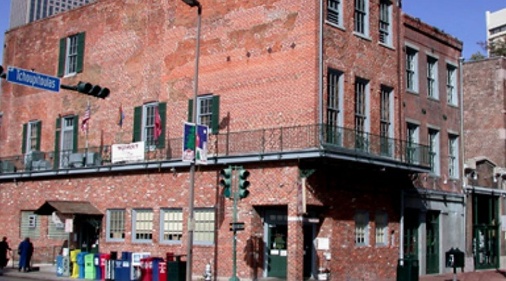

Johnnie and Oberta Baker's Photo Album Gallery Previous Next
|

Mother's Restaurant, about 2 blocks from our hotel.A landmark in New Orleans that seems to be always full. Good old Creole food that many natives come to savor. Their catfish was heavenly. Had dinner here with Paul, Pam, and Hong Very casual place. |